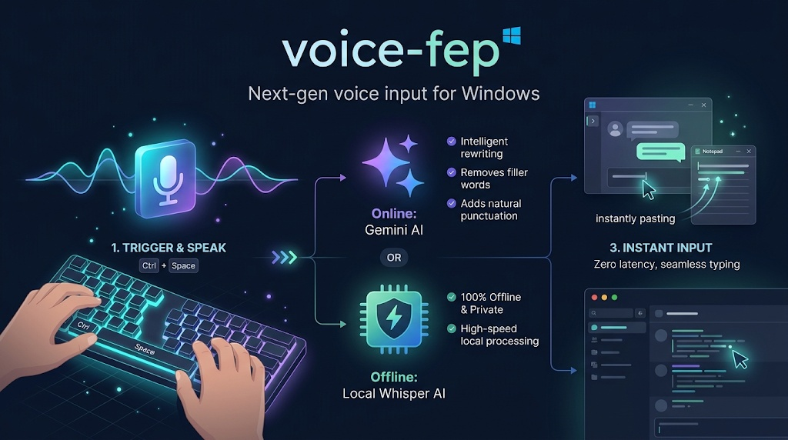

AI の音声入力がいい感じなので、
Windows 用の常駐型 FEP に仕立ててみました。
どこでも Ctrl+Space で音声入力。Google Gemini の賢い日本語整形と、
完全オフラインの Whisper のハイブリッド仕様。

Features
Ctrl+Space を押している間だけ録音し、キーを離した瞬間にメモ帳・ブラウザ・チャットツールへダイレクトペースト。アクティブなウィンドウを選ばずどこでも使えます。
クラウド版は Google Gemini が言い淀みを除去し、自然な句読点を整形。APIキーなし・オフライン環境では Whisper がローカル完結で動作。プライバシーも速度も両立します。
ZIP を解凍して voice-fep.exe を起動するだけ。Python 環境や追加インストールは一切不要です。設定は隣の .env ファイルを編集するだけ。